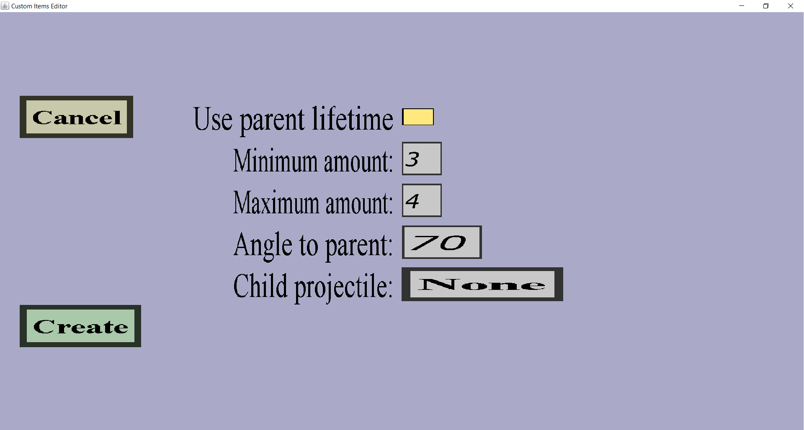

The subprojectile effect edit menu can be used to add a subprojectile effect or to reconfigure an existing one. Subprojectile effects will cause the projectile to spawn another projectile at its location. The menu should look like this:
There should be a 'Cancel' button and an 'Apply' or 'Create' button. Also, there should be a checkbox for the lifetime, an edit field for the minimum/maximum amount, the angle to the parent and a button to choose the child projectile.
If you check this checkbox, the lifetime of the subprojectile will be the remaining lifetime of the 'parent' projectile that launched it. So if the parent projectile fires the subprojectile when the parent almost expires, the subprojectile will have a short lifetime.
This is usually not what you want, but this is very useful when the subprojectile is the 'same' custom projectile as the parent (so for instance when a custom fireball with a lifetime of 20 seconds would fire another custom fireball as subprojectile after 8 seconds have passed).
If in that scenario you didn't check this checkbox, the parent fireball would fire another fireball as subprojectile after 8 seconds which in turn would spawn yet another fireball after 8 more seconds passed, which would also spawn yet another fireball...
But if you did check this checkbox, the second fireball will be spawned with the remaining lifetime of the first fireball, namely 12 (= 20 - 8) seconds. 8 seconds later, it will spawn the third fireball, which will only have a lifetime of 4 (= 12 - 8) seconds. That one will not spawn a fourth fireball because the third fireball will have been expired before it reaches the 8 seconds since it only has 4 seconds lifetime.
If this angle is another number, there are multiple possible directions in which the child projectile can be launched, and one of those directions will be picked randomly each time a child projectile is launched.
To illustrate why there are multiple directions, consider the scenario where the parent projectile is flying vertically (upwards, towards the sky) and the Angle to parent is 90 degrees. The direction of the child projectile must then be horizontally to make an angle of 90 degrees with the vertical direction of the parent. However, any horizontal direction is allowed. For instance, it could fly towards the north, east, south and west (or north-east, or south-west...) since they are all horizontal.